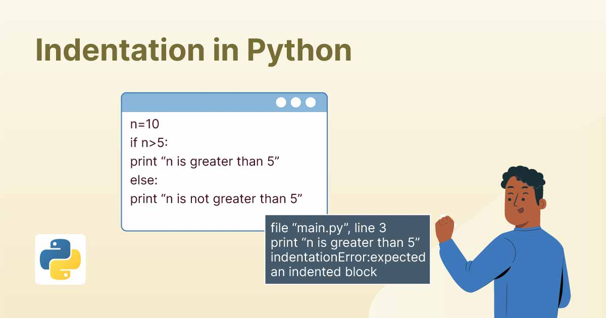
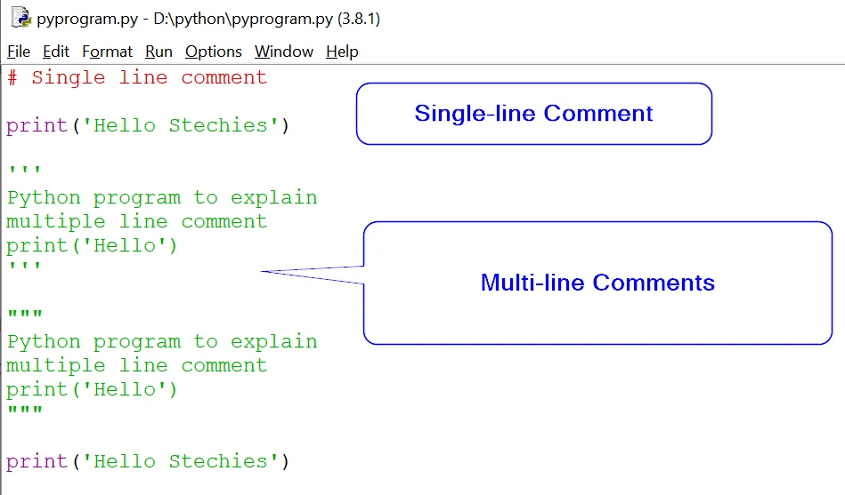
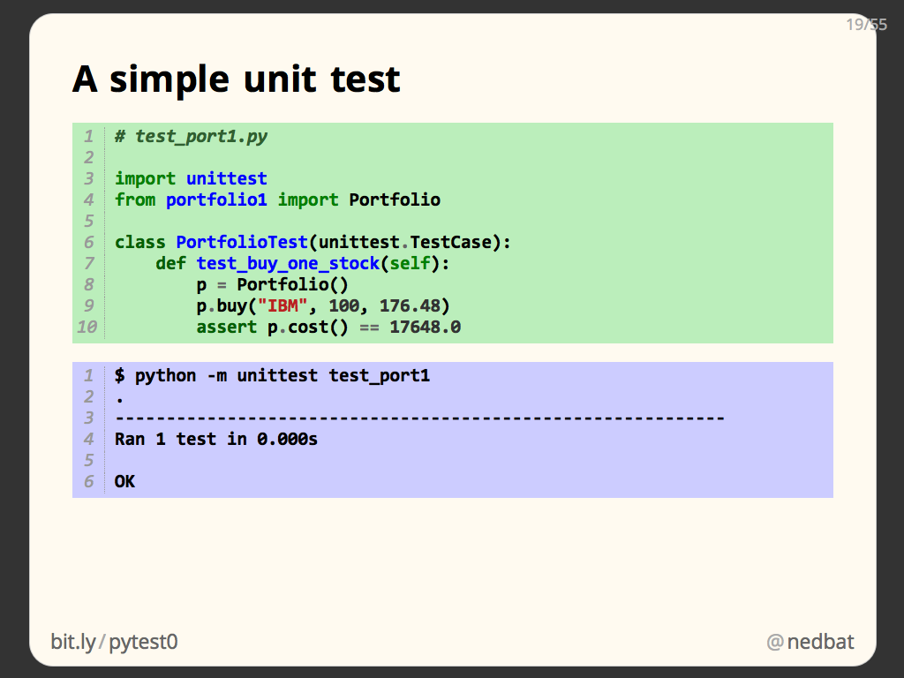

python syntax
Indentation:

Use consistent indentation (usually four spaces) to define blocks of code. Avoid mixing tabs and spaces.
Naming Conventions:
- Use descriptive variable and function names. Follow the convention of using lowercase letters with underscores for variable and function names (my_variable, my_function).
- Class names should follow the CapWords convention (each word capitalized) (MyClass).
- Constants are usually named in uppercase (MY_CONSTANT).
Comments:

- Use comments to explain complex code, especially when it might not be immediately obvious.
- Keep comments concise and up-to-date. Remove unnecessary comments.
Whitespace:

- Use a single space around operators (+, -, *, /) and after commas in function arguments.
- Avoid extraneous whitespace at the end of lines.
imports:
- Import only what you need. Avoid using wildcard imports (from module import *).
- Group imports in the following order: standard library modules, third-party modules, and your own modules.
Function and Method Design:
- Functions and methods should do one thing and do it well (Single Responsibility Principle).
- Use meaningful parameter names and provide docstrings to explain the purpose of functions and their parameters.
Exception Handling:

- Use try-except blocks for handling exceptions.
- Be specific in catching exceptions; avoid catching generic exceptions unless necessary.
Testing:

- Write unit tests for your code using the unittest or pytest frameworks
- Keep tests in a separate directory and use naming conventions like test_module.py.